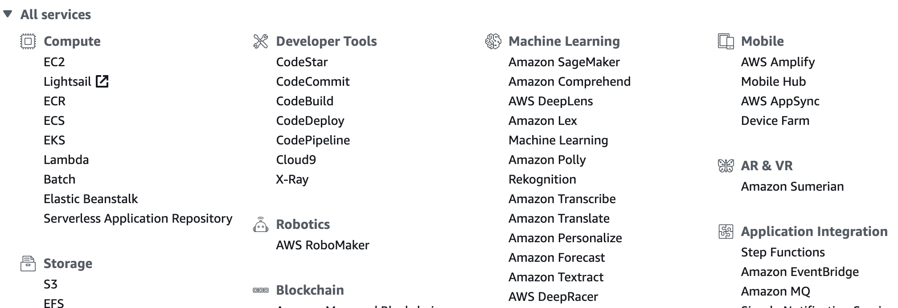
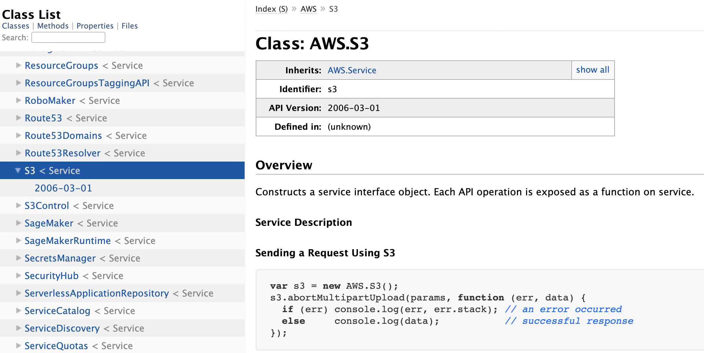
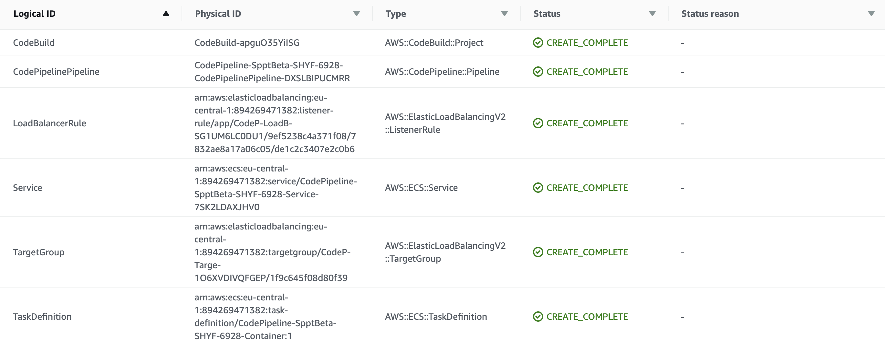
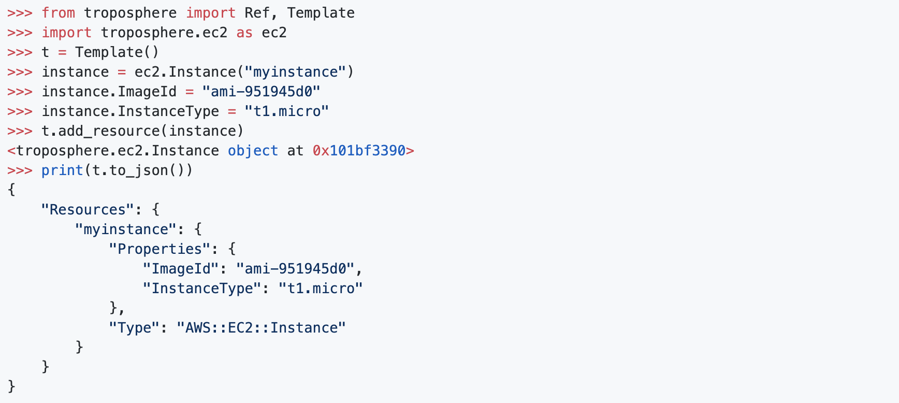
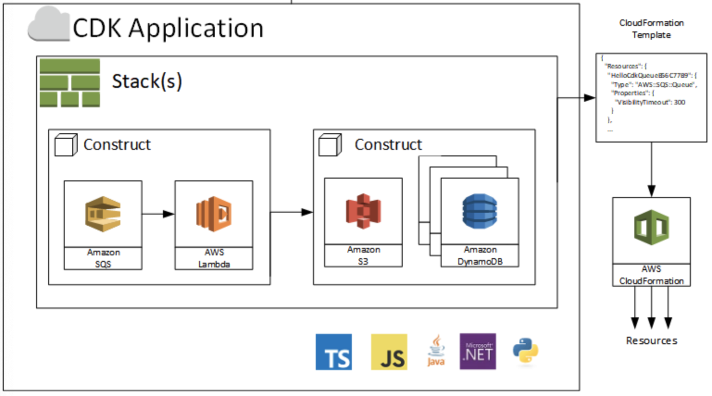
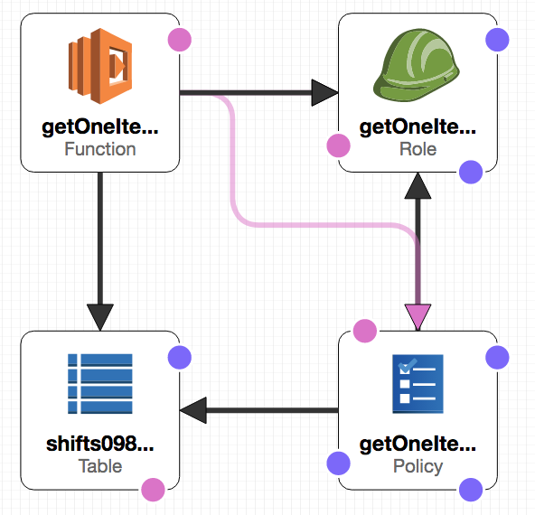
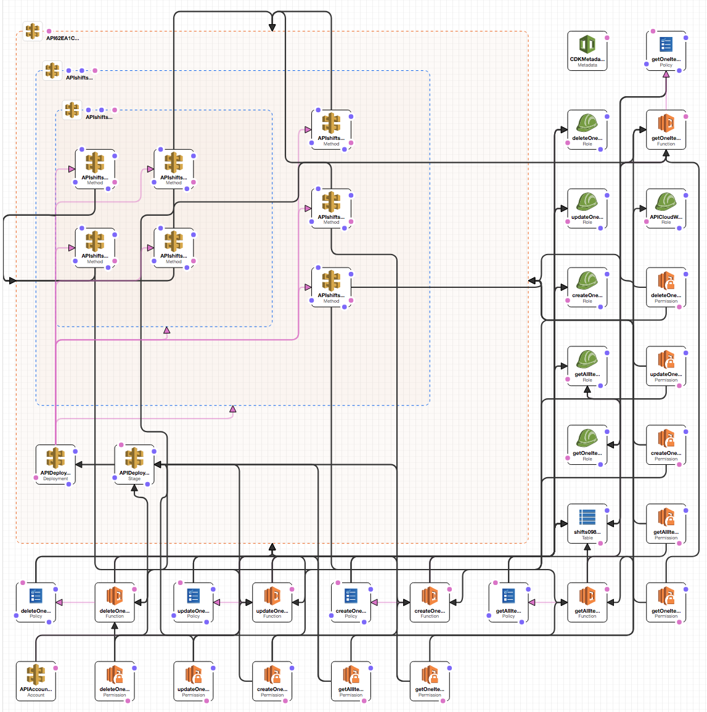
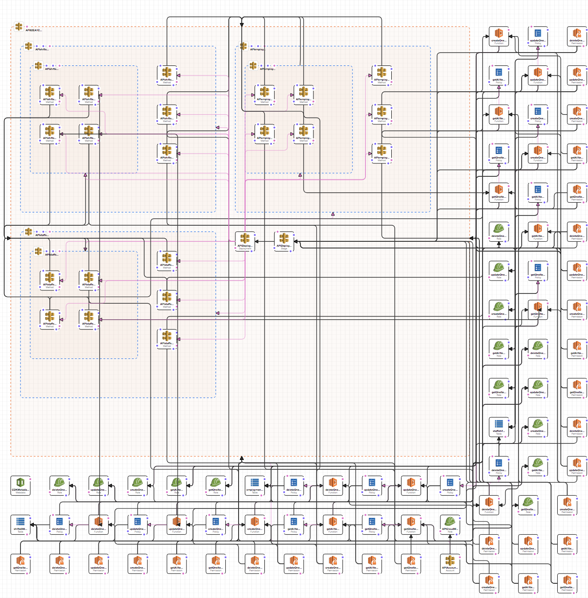

Lets Talk about ...
AWS Cloud Development Kit
Lets Talk about ...
CDK
Agenda
- Motivation
- CloudFormation
- Demo
- Summary
Motivation
How to build Infrastructure within AWS
Manual
- 👍
Easy to start - 🤔
Not reproduceable - 🤔
Error prone - 🤔
Time consuming
Scripting
- 👍
Reproduceable - 🤔
Error handling? - 🤔
How to update? - 🤔
How to roll back?
CloudFormation
- 👍
Easy to automate - 👍
Easy to reproduce - 😒
Complicated syntax - 😒
No abstraction
Document Object Models (DOMs)
- 💚
Real Code - 👍
Desired State - 😒
No Asset Mgmt. - 😒
Limited languages
Cloud Development Kit
- 💚
Real Code - 💚
Asset Management - 💚
Many languages - 👍
Desired State
Demo
What are we building now
Is that all?
We have also routing
Thats it?
We have multiple routes
Lets do it!
Demo
Thats it
Whats next?
Questions?